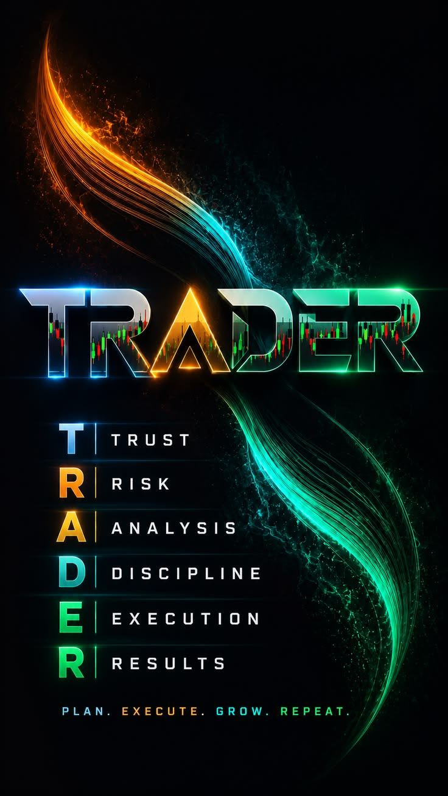

Learn
Voir avant de croire.
Les notions commencent par une observation, une comparaison ou un cas concret. Le jargon vient après la compréhension.
DARIUS DIGITAL ACADEMY ABIDJAN · AFRIQUE FRANCOPHONE · MONDE
Trading & Financial Markets Learning OS
DDA transforme l’apprentissage des marchés en un parcours où chaque notion doit être observée, pratiquée et prouvée — pas simplement regardée.
Learn
Les notions commencent par une observation, une comparaison ou un cas concret. Le jargon vient après la compréhension.
Practice
Décisions guidées, erreurs possibles, feedback et retry : DDA transforme une idée en compétence avant toute mise en situation réelle.
Prove
Une leçon ouverte n’est pas une compétence. DDA conserve des preuves concrètes de ce qui a été compris, appliqué et validé.
Born in Africa. Built for serious learners.
L’expérience DDA
Une seule prochaine action claire, calculée à partir de ta vraie progression — jamais une liste figée.
Chaque module affiche son vrai statut : verrouillé, en cours ou validé — jamais un pourcentage inventé.
Un carnet personnel pour documenter tes observations et tes décisions, pas un flux social.
Des preuves concrètes — exercices et quiz réellement validés — jamais une barre qui avance seule.
Le vrai problème
Vidéos, threads, groupes — sans savoir par où commencer ni quoi apprendre ensuite.
Comprendre une notion en la regardant n’est pas la même chose que savoir l’appliquer.
Sans mesure réelle, impossible de savoir ce qui est réellement acquis.
Les décisions impulsives se corrigent par l’entraînement guidé, pas par davantage de contenu.
Comment ça marche
Comprendre où commencer, selon ton niveau réel.
Acquérir les fondamentaux, une notion observée à la fois.
Mettre chaque notion en application, avec feedback et retry.
Comprendre tes erreurs et ta progression réelle.
Continuer à construire — DDA ne s’arrête jamais à une leçon terminée.
Accès DDA
Aujourd’hui
Pour démarrer sérieusement, sans rien débourser.
À venir
Pour transformer la compréhension en compétence mesurable.
Aucun paiement n’est activé pour le moment — DDA Premium s’active en aperçu local une fois ton compte créé.
Confiance
Commence gratuitement. Ta progression reste sur cet appareil, ton rythme reste le tien.
Fondations des marchés
Ton inscription personnalise ton parcours et reste sur cet appareil : ton nom, ton e-mail et tes réponses ne sont jamais transmis. Une mesure d’audience anonyme (jamais ton identité) peut être utilisée pour comprendre comment les visiteurs découvrent DDA.
Une progression existe déjà sur cet appareil.
Aujourd’hui dans DDA
Une étape claire pour continuer à progresser.
Cette semaine +20 XPActivité 0 jour
En coursFondations des marchésLEÇON
Comprendre l’échange entre acheteurs et vendeurs avant de chercher une opportunité.
Ta vision complète : marchés, journal, compétences — au-delà de la prochaine étape.
Intelligence marché
Journal & Plan
Profil de compétences
DDA Family
Partage tes observations, compare ton raisonnement, apprends des décisions des autres apprenants DDA.
DDA Premium
Ateliers pratiques, personnalisation du parcours, continuité au-delà de M0 — la suite logique, pas une offre pressée.
Pas de boule de cristal. Une méthode, étape par étape.
Darius Free
Chaque étape se débloque après une vraie validation, jamais après une simple ouverture.

Pas un raccourci. La vraie compétence se construit, preuve après preuve.
Progression
Chaque niveau ci-dessous repose sur une preuve réelle — une leçon ouverte n’est jamais comptée comme une compétence acquise.
Fil de maîtrise
Parcours M0–M9
Certification
Termine ta première leçon (M0.1) pour débloquer un aperçu de certification.
L’aperçu de certification est réservé à DDA Premium.
Darius Digital Academy
a complété —
—
Maquette pédagogique — aucune certification officielle n’est délivrée pour le moment. Une émission réelle nécessitera une validation complète du parcours et une infrastructure dédiée, non encore activée.
Badges
Journal & Plan
Un espace pour documenter ton processus de décision — jamais un signal, jamais un conseil d’achat ou de vente, jamais un chiffre de gain inventé. Conservé uniquement sur cet appareil.
Documente ta première analyse — ce que tu as prévu, ce que tu as fait, ce que tu en retiens.
Nouvelle entrée
Documente ton processus personnel — pas tes objectifs de gain. Ces réponses orientent la manière dont DDA t’accompagne, jamais ce que tu dois trader.
Bibliothèque DDA
Des ressources courtes pour comprendre, pratiquer et décider avec méthode.
Rayon Free — à lire dès maintenant
Six vérifications simples pour éviter la précipitation et protéger ton processus.
Acheteur, vendeur, actif, liquidité et risque expliqués sans jargon.
Des scénarios guidés pour travailler sizing, invalidation et discipline.
Ressource DDA
Accès DDA
DDA Free pose les fondations. Premium approfondira la pratique, l’évaluation et la preuve de progression. Aucun paiement n’est activé pour le moment.
Ce que tu as aujourd’hui
Pour démarrer sérieusement, sans rien débourser.
Ce que Premium approfondira
Pour transformer la compréhension en compétence mesurable.
Pourquoi Premium continue d’apporter de la valeur
Journal & Plan est la première brique réellement construite de cette pile ; DDA l’étoffera puis construira le reste étape par étape — jamais toutes en même temps. Statuts réels ci-dessous, pas une promesse uniforme.
DDA Family
DDA Family n’est pas un groupe de messagerie — c’est l’appartenance à l’écosystème DDA : une institution qu’on rejoint pour apprendre, partager ses observations et comparer son raisonnement avec d’autres apprenants sérieux.
Garde-fous
Market Intelligence
Un aperçu éditorial du futur cockpit DDA. Aucune donnée ci-dessous n’est connectée à une source réelle — chaque zone le précise explicitement. Cet espace couvre les étapes « Suivre les marchés » et « Revenir » de la boucle d’apprentissage DDA.
Tu as suivi cet espace 1 jour sur cet appareil.
Vue marché
Pourquoi cela compte
Identifier le fait, sans exagération ni prédiction.
Relier l’événement à la volatilité, au risque et au comportement.
Ouvrir la leçon utile au lieu de fournir un signal.
BRVM — Afrique de l’Ouest
La BRVM est la bourse régionale commune aux 8 pays de l’UEMOA. DDA préparera une lecture accessible des sociétés cotées, indices, publications et notions d’investissement régional.
Exemple pédagogique
Aperçu de la mise en page qu’aura le vrai calendrier BRVM une fois une source officielle connectée. Aucune société, date ou montant réel n’est affiché.
Réfléchir / documenter
Un mouvement de marché t’interpelle ? Documente ton observation avant d’agir.
Les marchés sont mondiaux. Ton choix de broker doit rester le tien.
DDA Broker Hub
Un outil d’orientation, pas une vitrine : DDA ne recommande aucun broker, elle t’aide à comparer selon ton propre besoin. Filtre les profils ci-dessous — licences, coûts et disponibilités devront être vérifiés avant publication.
Comment lire une fiche
Selon ton pays, à confirmer avant toute mise en avant réelle.
Toute relation partenaire sera déclarée clairement, jamais dissimulée.
Aucune fiche n’est publiée tant qu’elle n’a pas été validée.
Réponds aux deux critères ci-dessous pour affiner l’orientation selon ton propre besoin — l’ordre d’affichage n’est jamais influencé par une commission ni par un classement commercial.
Profils
Profil pour marchés dérivés et indices synthétiques.
Profil pour Forex et CFD, sous réserve d’éligibilité locale.
Profil pour Forex et CFD, sous réserve d’éligibilité locale.
Profil pour Forex et instruments dérivés, sous réserve d’éligibilité locale.
Modifie les filtres pour afficher un autre usage.
DDA ne recommande jamais de déposer davantage, de sur-trader ou de prendre un risque inadapté. Le classement n’est jamais basé sur une commission perçue par DDA. Une éventuelle rémunération d’affiliation devra être signalée clairement avant toute activation réelle.
Centre d’aide
Ce centre d’aide prépare le support avant d’activer les canaux et notifications réels.
Questions fréquentes
Pour l’instant, elle reste uniquement sur cet appareil.
Non. Aucun paiement réel n’est activé.
Non. DDA enseigne le processus, le risque et la compréhension des marchés.
Pas encore. Sans compte serveur, chaque appareil garde sa propre progression locale.
Demander de l’aide
Aucun message n’est envoyé pour l’instant — ta demande reste sur cet appareil.
Aperçu — bientôt disponible
Apprendre, échanger et progresser avec d’autres apprenants DDA — une fois cette brique activée.
Ces espaces ne sont pas encore actifs — DDA ne simule jamais une conversation qui n’existe pas.
Ce qui existe déjà
Le laboratoire pratique déjà proposé dans Ressources Premium — sizing, invalidation, discipline.
Tes espaces réels aujourd’hui
Aucune inscription réelle — juste une préférence locale sur cet appareil.
Aperçu — bientôt disponible
Des outils pour analyser tes décisions plus finement — une fois cette brique activée.
Ces outils ne sont pas encore actifs — DDA ne simule jamais une analyse ou un score qu’il n’a pas réellement calculé.
Ce qui existe déjà
La base réelle sur laquelle ces outils s’appuieront : documenter chaque décision, une par une.
Tes statistiques réelles aujourd’hui
Aucune inscription réelle — juste une préférence locale sur cet appareil.
Aperçu — bientôt disponible
Un accompagnement plus personnalisé, pensé pour s’appuyer sur ce que tu construis déjà — jamais pour le remplacer.
Rien ici n’est actif — DDA ne fait jamais parler une IA qui n’existe pas encore.
Ce qui existe déjà
Chaque étape se débloque selon ta propre progression réelle — jamais un algorithme, juste ta validation.
Aucune inscription réelle — juste une préférence locale sur cet appareil.
Espace personnel
Modifie uniquement ce qui aide DDA à te proposer la prochaine étape utile.
Commence l’inscription pour créer ton premier parcours.
Préparation de ton parcours…
DDA Premium
Aucun achat ni paiement réel n’est proposé ici.